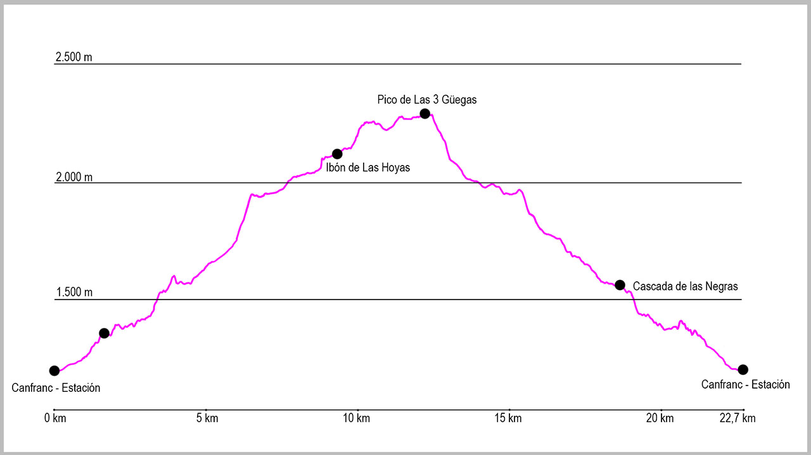

Desde el puente de la Estación de Canfranc, cogeremos la calle principal en dirección norte. Al llegar al final del pueblo seguiremos por el arcén derecho, y justo al pasar la boca española del Túnel de Somport sale un pequeño camino que va paralelo a la carrera. Lo tomaremos y, a escasos 200 metros, llegaremos a un primer puente que cruza el río Aragón y desde donde sale la pista que tomaremos en la parte inicial de la ruta. Una vez estemos en ella, no deberemos dejarla hasta el final de la misma. Varios cruces saldrán a nuestra derecha (Melancólicos o Casita Blanca), pero nosotros la seguiremos. Tras una primera curva de 180ª, la pista va cogiendo altura para llegar a una zona ya sin apenas bosque. Aquí volverá a hacer otras dos curvas de herradura para llevarnos a partir de este punto a dar vista a Coll de Ladrones.
Una vez llegados al fuerte, seguiremos la pista. Primero desciendo unos metros en dirección este, para poco después llegar a un cruce, que tomaremos a nuestra derecha de manera claramente ascendente. Este sendero es el que nos llevará hasta el punto de retorno de nuestra ruta.
Desde este punto vamos a recorrer tanto en la ida como en la vuelta el valle de Izas desde su final hasta la cabecera. El principio es algo incómodo, con varias zonas de subidas y bajadas antes de llegar a una pedrera que sortearemos sin mucha dificultad si no está mojada. En ella ganaremos rápidamente altura hasta llegar a donde se abre el valle. En estas campas seguiremos el camino marcado para atravesarlas. Al final de ellas los pies nos llevan a una senda bien marcada a nuestra izquierda, pero será muy importante seguir rectos. Si seguimos el camino, nos llevará enseguida al refugio de Iserias.
Desde el mismo refugio abandonaremos el camino y giraremos a la derecha para afrontar una corta pero muy inclinada subida en dirección a la Pala de Ip. La subida se hace en línea recta, para una vez terminada giraremos a la izquierda en dirección a Punta Escarra. Este tramo no tienes un sendero claro, pero si no perdemos de referencia este pico no tendremos problemas. Esta zona es bastante llana y cómoda, aunque tiene pequeñas subidas y bajadas todo el rato.
Poco a poco nos adentraremos en el valle en dirección este y en una de las vaguadas más grandes encontraremos el ibón de las Hoyas (a veces seco). Seguiremos en la misma dirección hacia Punta Escarra, y un poco más adelante divisaremos una zona de grandes bloques de piedra. Deberemos atravesarla, para a continuación empezar la subida por una pedrera de piedra gris hasta el collado de Balsera (como referencia, es la primera parte de la cresta donde podremos acceder sin escalar).
Desde este punto cogeremos un camino que sale a nuestra izquierda para recorrer toda la cresta que nos separa del valle de Tena, una zona bastante más cómoda. Pasaremos por los picos del Porrón, La Sierra y de Las Tres Güegas, antes de bajar al collado de Izas desde este último, donde en los último treinta metros tendremos que tener especial cuidado.
Una vez en el collado nos quedará la vuelta hasta Canfranc. Cogeremos en este momento la antigua GR11 en dirección oeste, manteniéndonos todo el rato en la margen izquierda del barranco de Izas.
Poco a poco iremos recuperando altura en el valle hasta que lleguemos de nuevo hasta el refugio de Iserias. Desde este punto la vuelta hasta Canfranc se realiza por el mismo recorrido que la subida, pasando por Coll de Ladrones primero y bajando desde allí hasta el pueblo.
